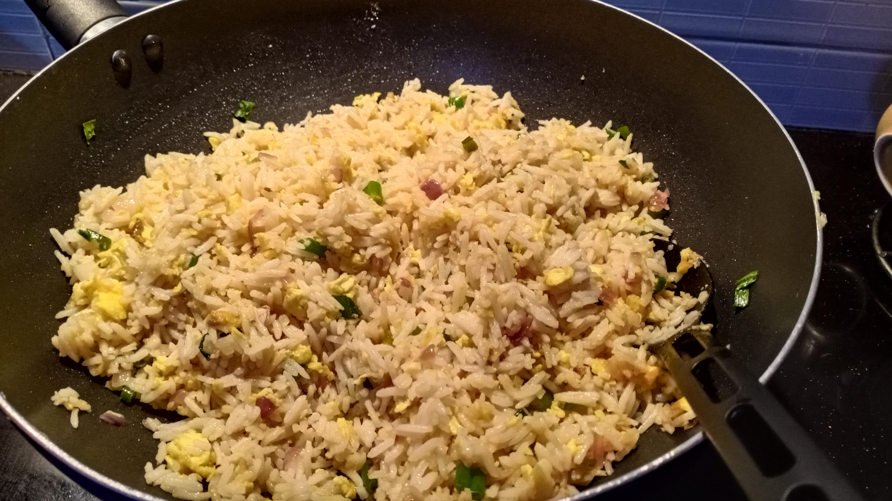

Odin Recipies
Egg Fried Rice

Description
HELLOOO EVERYBODY! its yer boy vjay here with another dish that I'd ABSOLUTELY eat till nothing is left but won't eat it.(Dont ask why)
This is one of the most famous dishes as well as the most simplest dishes, requiring absolutely very less ingredients and time to prepare it.
Plus this dish is very Uncle Roger friendly. Alright enough banter or Uncle Roger would go "HAIYAAAAA this nephew talking too much".
Ingredients
- 2 tbsp. Peanut Oil
- 5 Garlic Cloves, smashed
- 1 Shallot, sliced from the middle
- 1 Egg +1 Egg Yolk
- 1 Spring Onion, sliced
- 1 Red Chili, sliced or chopped
- 4 cups of day old jasmine rice
- 2 tbsp. Soy Sauce
- 2 tbsp. Asian Sesame Oil
- just how much of MSG you want, personally I suggest 1 packet(yes 1 packet you got any problem with that?)
This dumbass copilot is suggesting me 1/2 cup of peas, I DONT WANT veggies in Uncle's fried rice dumbass. Also have a wok and a gas stove, we need
that to make the absolute best fried rice. The way to master asian food is to be a wok fuckboy and learn fire bending.
Steps
- Whisk the whole egg and the egg yolk in a small bowl, and set it aside.
- Coat a wok pan with peanut oil and put it over medium heat. Once it starts smoking, pour the excess oil out of the pan.
- Add the garlic and shallot in the pan and fry them for 3 minutes.
- Add the beaten egg to the wok and stir it around until it's almost solid
- Add the day old rice and mix it with everything in the wok.
- Add the soy sauce and sesame oil and flatten it into the rice with the back of a spoon.
- Add the MSG packet(just the MSG), spring onion, and chilli to the wok and cook for a minute or so, mixing all of the ingredients together.
ITS READYYYYY!!!!!! I hope you guys had fun making it and also more fun eating it. Make sure to not put veggies, it severely causes damage to asian ancestors
© All rights reserved by NONE